<section id="recipes" class="container mt-5 mb-5">
<div class="container mt-4">
  <h1 class="text-center mb-4">Recipes & Healthy Tips</h1>

  <div class="row">
    
    <!-- MAIN CONTENT: recipes -->
    <div class="col-lg-9">
      <section id="recipes" class="mb-5">
        <div class="row g-4">


      <div class="col-md-6 col-lg-4">
        <div class="card h-100">
          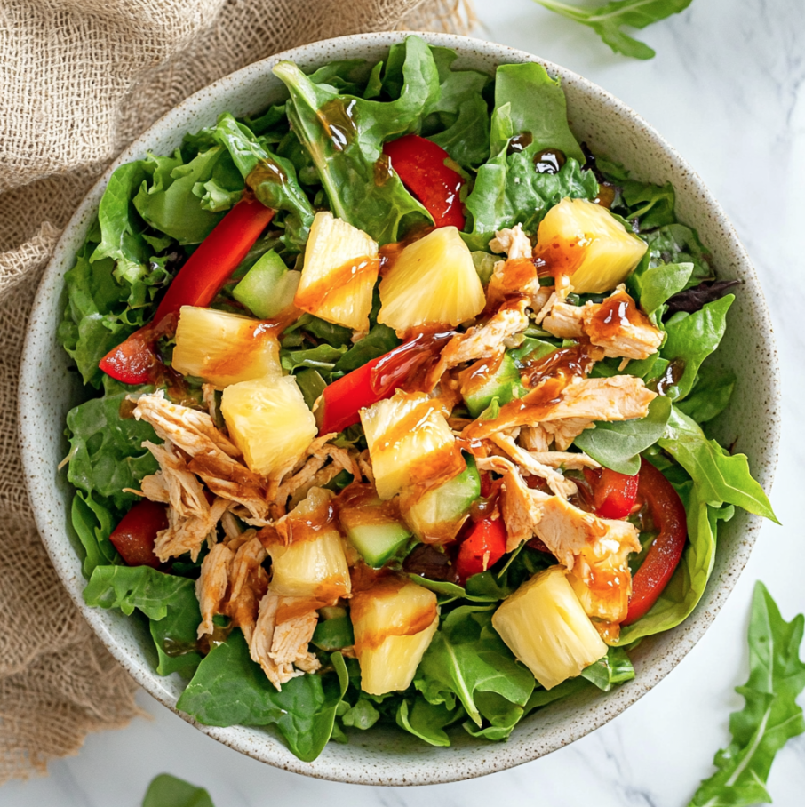
          <div class="card-body">
            <h3 class="card-title">Chicken Salad Bowl</h3>
            <p class="card-text">
              Tropical vibes in every bite! Juicy chicken paired with sweet pineapple and tangy teriyaki dressing.
            </p>
            <h4>Ingredients</h4>
            <ul>
              <li>2 cups cooked chicken breast, shredded</li>
              <li>1 cup pineapple chunks</li>
              <li>2 cups mixed greens</li>
              <li>1/2 cup sliced red bell pepper</li>
              <li>1/4 cup teriyaki dressing</li>
            </ul>
            <h4>Instructions</h4>
            <ol>
              <li>Layer greens, chicken, pineapple, and red bell pepper in a bowl.</li>
              <li>Drizzle with teriyaki dressing and toss gently.</li>
            </ol>
          </div>
        </div>
      </div>

      <!-- Pasta Primavera -->
      <div class="col-md-6 col-lg-4">
        <div class="card h-100">
          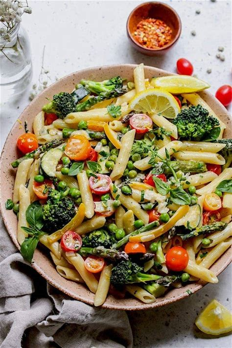
          <div class="card-body">
            <h3 class="card-title">Pasta Primavera</h3>
            <p class="card-text">
              A light Italian-American dish with pasta and fresh seasonal vegetables in a creamy lemon-parmesan sauce.
            </p>
            <h4>Ingredients</h4>
            <ul>
              <li>16 oz penne pasta</li>
              <li>1 tablespoon olive oil</li>
              <li>8 oz asparagus, cut into 1½-inch pieces</li>
              <li>1 yellow bell pepper, cut into 1½-inch pieces</li>
              <li>2 cups small broccoli florets</li>
              <li>1 small zucchini, chopped</li>
              <li>Salt and black pepper to taste</li>
              <li>2 tablespoons unsalted butter</li>
              <li>1 shallot, minced</li>
              <li>4 garlic cloves, minced</li>
              <li>Zest of 1 lemon</li>
              <li>Dash crushed red pepper flakes</li>
              <li>1 cup vegetable broth</li>
              <li>½ cup heavy cream</li>
              <li>3 tablespoons lemon juice, divided</li>
              <li>1 cup frozen peas</li>
              <li>½ cup shredded Parmesan cheese</li>
              <li>1½ cups halved grape tomatoes</li>
              <li>¼ cup chopped basil</li>
              <li>2 tablespoons Italian parsley, for garnish</li>
              <li>Extra Parmesan cheese, for garnish</li>
              <li>Crushed red pepper flakes, for garnish</li>
            </ul>
            <h4>Instructions</h4>
            <ol>
              <li>Cook pasta in salted boiling water for about 11 minutes. Drain and return to pot.</li>
              <li>Sauté asparagus, peppers, and broccoli in olive oil for 2–3 minutes. Add zucchini and cook until
                crisp-tender. Season and set aside.</li>
              <li>Melt butter in the skillet, add shallot and garlic, cook 2 minutes. Add lemon zest and broth, reduce
                by half.</li>
              <li>Stir in cream and 2 tbsp lemon juice.</li>
              <li>Add peas to pasta, then vegetables, then sauce. Stir in Parmesan and remaining lemon juice.</li>
              <li>Gently fold in tomatoes and basil. Season to taste and garnish with parsley, extra Parmesan, and red
                pepper flakes.</li>
            </ol>
          </div>
        </div>
      </div>

      <!-- Pancakes -->
      <div class="col-md-6 col-lg-4">
        <div class="card h-100">
          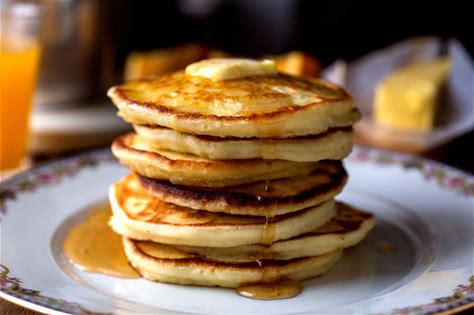
          <div class="card-body">
            <h3 class="card-title">Pancakes</h3>
            <p class="card-text">
              Soft, fluffy cakes made from a simple batter, perfect for a cozy breakfast.
            </p>
            <h4>Ingredients</h4>
            <ul>
              <li>2 cups all-purpose flour</li>
              <li>2 teaspoons baking powder</li>
              <li>¼ teaspoon salt</li>
              <li>1 tablespoon sugar (optional)</li>
              <li>2 eggs</li>
              <li>1½ to 2 cups milk</li>
              <li>2 tbsp melted butter (optional) + butter/oil for cooking</li>
            </ul>
            <h4>Instructions</h4>
            <ol>
              <li>Heat a griddle or large skillet over medium-low heat.</li>
              <li>Mix dry ingredients in a bowl.</li>
              <li>Beat eggs into 1½ cups milk, then stir in melted butter (if using).</li>
              <li>Combine wet and dry ingredients, stirring just until moistened. Add more milk if too thick.</li>
              <li>Grease the pan, ladle batter, and cook until bubbles form and bottoms are golden.</li>
              <li>Flip and cook until the second side is lightly browned.</li>
              <li>Serve immediately or keep warm in a 200°C oven for up to 15 minutes.</li>
            </ol>
          </div>
        </div>
      </div>

      <!-- Tomato Soup -->
      <div class="col-md-6 col-lg-4">
        <div class="card h-100">
          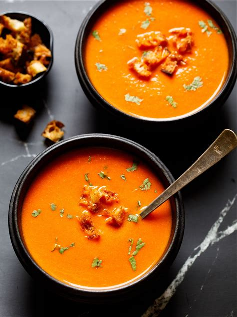
          <div class="card-body">
            <h3 class="card-title">Tomato Soup</h3>
            <p class="card-text">
              A smooth, comforting soup made from ripe tomatoes, perfect with bread or grilled cheese.
            </p>
            <h4>Ingredients</h4>
            <ul>
              <li>2 tbsp butter or olive oil</li>
              <li>2 bay leaves</li>
              <li>⅓ cup finely chopped onions</li>
              <li>½ tsp finely chopped garlic</li>
              <li>500 g tomatoes, chopped</li>
              <li>1 cup water or vegetable broth</li>
              <li>Salt to taste</li>
              <li>1 tsp sugar (to taste)</li>
              <li>Freshly crushed black pepper</li>
              <li>½ cup bread cubes (for croutons)</li>
              <li>1 tbsp olive oil (for croutons)</li>
              <li>Pinch salt and pepper (for croutons)</li>
              <li>1 tbsp parsley or coriander, chopped</li>
              <li>1–2 tbsp heavy cream (optional)</li>
            </ul>
            <h4>Instructions</h4>
            <ol>
              <li>Heat butter/oil in a pot, add bay leaves.</li>
              <li>Sauté onions and garlic until softened.</li>
              <li>Add tomatoes and salt, cover and cook until soft.</li>
              <li>Remove bay leaves. Blend mixture until smooth and optionally strain.</li>
              <li>Return to pot, add water and sugar, simmer gently. Season with pepper.</li>
              <li>Stir in cream (optional). Adjust salt and pepper.</li>
              <li>For croutons, toss bread cubes with oil, salt, and pepper, then toast until golden.</li>
              <li>Serve soup hot with croutons and herbs on top.</li>
            </ol>
          </div>
        </div>
      </div>

      <!-- Fruit Salad -->
      <div class="col-md-6 col-lg-4">
        <div class="card h-100">
          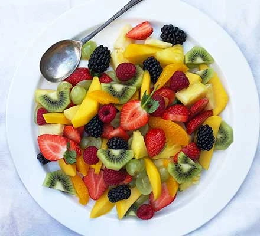
          <div class="card-body">
            <h3 class="card-title">Fruit Salad</h3>
            <p class="card-text">
              A refreshing mix of colorful, juicy fruits for a light and healthy dish.
            </p>
            <h4>Ingredients</h4>
            <ul>
              <li>2 kiwi</li>
              <li>1 mango</li>
              <li>150 g pineapple</li>
              <li>100 g grapes</li>
              <li>400 g mixed berries</li>
              <li>1 large orange</li>
              <li>2 tsp honey (optional)</li>
            </ul>
            <h4>Instructions</h4>
            <ol>
              <li>Peel and slice kiwi into a bowl.</li>
              <li>Peel mango, remove stone, slice and add.</li>
              <li>Peel and chop pineapple, add to bowl.</li>
              <li>Halve grapes and add with berries.</li>
              <li>Segment orange over the bowl to catch the juice, squeeze remaining membrane.</li>
              <li>Drizzle with honey if desired, mix gently.</li>
              <li>Chill for about 30 minutes before serving.</li>
            </ol>
          </div>
        </div>
      </div>

      <!-- Hamburger -->
      <div class="col-md-6 col-lg-4">
        <div class="card h-100">
          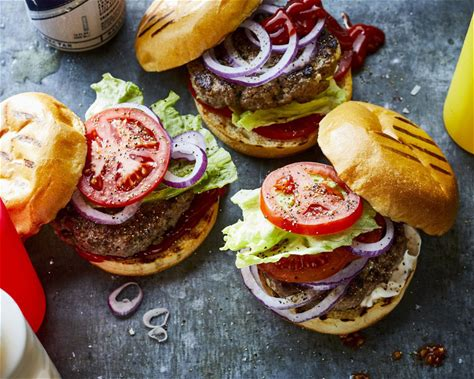
          <div class="card-body">
            <h3 class="card-title">Hamburger</h3>
            <p class="card-text">
              A classic burger with a seasoned beef patty, fresh toppings, and melted cheese.
            </p>
            <h4>Ingredients</h4>
            <ul>
              <li>2 lb ground chuck beef (80/20)</li>
              <li>Salt and pepper</li>
              <li>6 burger buns</li>
              <li>6 slices cheddar cheese</li>
              <li>1 large tomato, sliced</li>
              <li>12 leaves green leaf lettuce</li>
              <li>½ red onion, thinly sliced</li>
              <li>½ cup dill pickle slices</li>
            </ul>
            <h4>Instructions</h4>
            <ol>
              <li>Prepare toppings and sauces.</li>
              <li>Butter and toast buns until golden.</li>
              <li>Form 6 patties slightly wider than the buns. Season both sides.</li>
              <li>Grill patties 3–5 minutes per side until cooked to about 155–160°F.</li>
              <li>Add cheese in the last 1–2 minutes and cover to melt.</li>
              <li>Rest patties for 5 minutes.</li>
              <li>Assemble burgers with sauce, pickles, lettuce, tomato, onion, and patty.</li>
            </ol>
          </div>
        </div>
      </div>

      <!-- Quinoa Bowl -->
      <div class="col-md-6 col-lg-4">
        <div class="card h-100">
          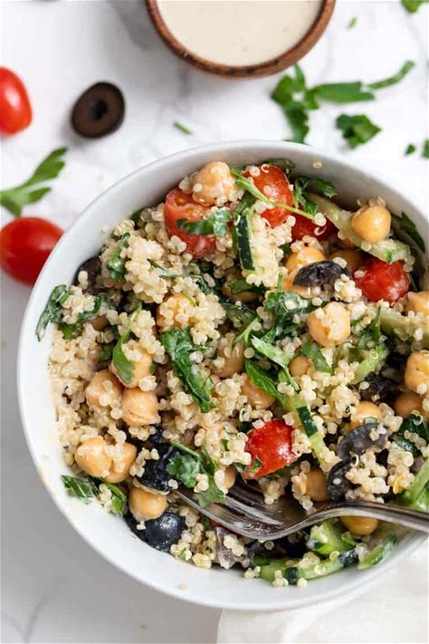
          <div class="card-body">
            <h3 class="card-title">Quinoa Bowl</h3>
            <p class="card-text">
              A wholesome bowl with quinoa, colorful veggies, protein, and healthy fats.
            </p>
            <h4>Ingredients</h4>
            <ul>
              <li>1 cup cooked quinoa</li>
              <li>1 cup veggies of choice</li>
              <li>½ cup protein of choice</li>
              <li>¼–½ cup healthy fat (avocado, nuts, seeds)</li>
              <li>Dressing or sauce of choice</li>
            </ul>
            <h4>Instructions</h4>
            <ol>
              <li>Add cooked quinoa to a bowl.</li>
              <li>Top with vegetables, protein, and healthy fat.</li>
              <li>Drizzle with dressing or sauce and serve.</li>
            </ol>
          </div>
        </div>
      </div>

      <!-- Mixed Berry Muffins -->
      <div class="col-md-6 col-lg-4">
        <div class="card h-100">
          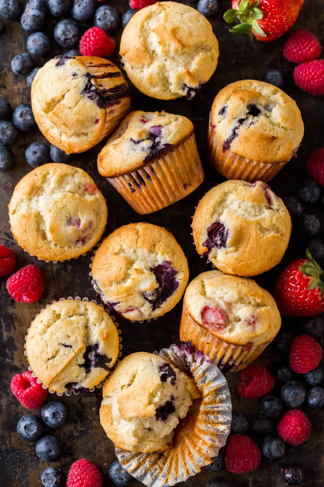
          <div class="card-body">
            <h3 class="card-title">Mixed Berry Muffins</h3>
            <p class="card-text">
              Soft, golden muffins loaded with strawberries, raspberries, and blueberries.
            </p>
            <h4>Ingredients</h4>
            <ul>
              <li>2 large eggs, room temperature</li>
              <li>1 cup sugar</li>
              <li>1 cup Greek yogurt or sour cream</li>
              <li>½ cup light olive oil</li>
              <li>1 tsp vanilla extract</li>
              <li>¼ tsp salt</li>
              <li>2 cups all-purpose flour</li>
              <li>2 tsp baking powder</li>
              <li>½ cup strawberries, diced</li>
              <li>½ cup raspberries</li>
              <li>½ cup blueberries</li>
            </ul>
            <h4>Instructions</h4>
            <ol>
              <li>Preheat oven to 200°C and line a 12-cup muffin tin.</li>
              <li>Beat eggs and sugar on high for 5 minutes until thick and light.</li>
              <li>Mix in yogurt, oil, and vanilla on low speed.</li>
              <li>Whisk flour, baking powder, and salt in a separate bowl.</li>
              <li>Fold dry ingredients into wet in thirds, mixing gently.</li>
              <li>Fold in berries carefully.</li>
              <li>Divide batter into muffin cups, filling to the top.</li>
              <li>Bake 20–22 minutes until golden and a toothpick comes out clean.</li>
              <li>Cool on a wire rack.</li>
            </ol>
          </div>
        </div>
      </div>

      <!-- Chocolate Milk -->
      <div class="col-md-6 col-lg-4">
        <div class="card h-100">
          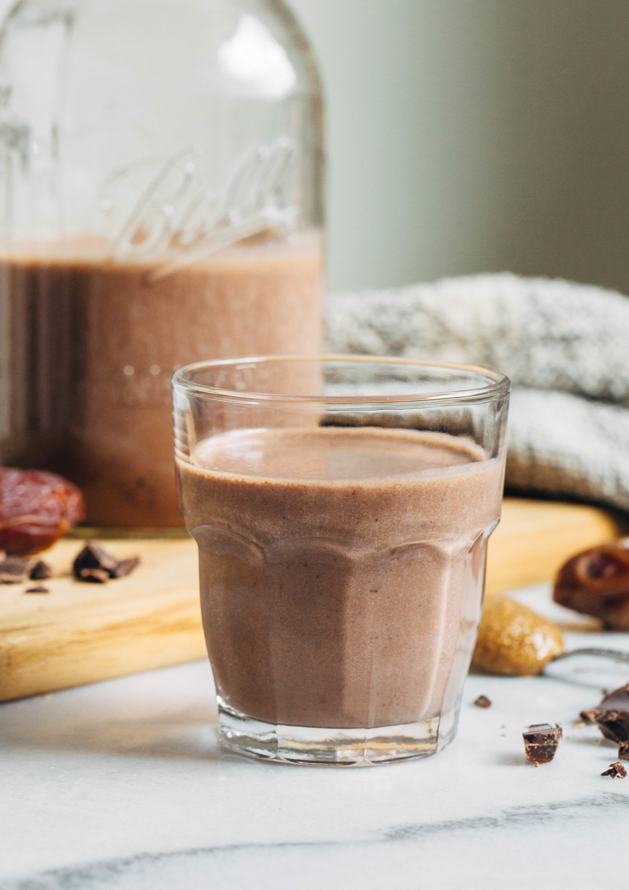
          <div class="card-body">
            <h3 class="card-title">Chocolate Milk</h3>
            <p class="card-text">
              A creamy, sweet drink made with milk, cocoa, and dates for natural sweetness.
            </p>
            <h4>Ingredients</h4>
            <ul>
              <li>2 cups milk of choice</li>
              <li>4 pitted Medjool dates</li>
              <li>2 tbsp cocoa powder</li>
              <li>1 tbsp almond butter (optional)</li>
            </ul>
            <h4>Instructions</h4>
            <ol>
              <li>Add all ingredients to a blender.</li>
              <li>Blend until completely smooth and creamy.</li>
              <li>Adjust sweetness if needed.</li>
              <li>Serve chilled and store leftovers in the fridge for up to 1 week.</li>
            </ol>
          </div>
        </div>
      </div>

      <!-- Stir Fry -->
      <div class="col-md-6 col-lg-4">
        <div class="card h-100">
          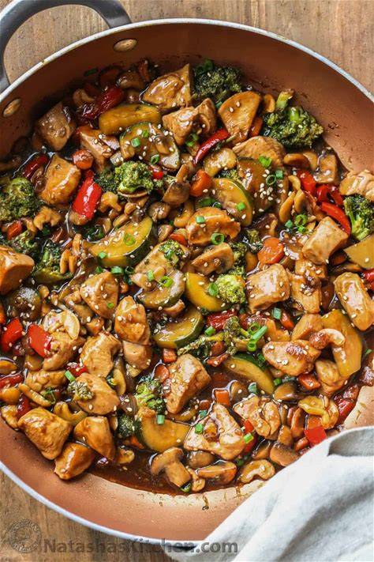
          <div class="card-body">
            <h3 class="card-title">Stir Fry</h3>
            <p class="card-text">
              A quick stir fry with chicken, veggies, cashews, and a savory sauce.
            </p>
            <h4>Ingredients</h4>
            <ul>
              <li>1 lb chicken thighs, cut into bites</li>
              <li>½ zucchini, sliced</li>
              <li>2 tbsp oil, divided</li>
              <li>1 tbsp butter</li>
              <li>1 cup broccoli florets</li>
              <li>1 small carrot, sliced</li>
              <li>8 oz mushrooms, sliced</li>
              <li>½ red pepper, cubed</li>
              <li>½ onion, cubed</li>
              <li>4 garlic cloves, minced</li>
              <li>1 tsp fresh ginger, minced</li>
              <li>½ cup cashews</li>
              <!-- sauce ingredients would go here if needed -->
            </ul>
            <h4>Instructions</h4>
            <ol>
              <li>Cut chicken and vegetables into even pieces.</li>
              <li>Heat 1 tbsp oil in a pan and cook chicken until browned and cooked through. Remove and set aside.</li>
              <li>Add remaining oil and butter, then cook vegetables until crisp-tender.</li>
              <li>Return chicken to the pan, add garlic and ginger, cook 1 minute.</li>
              <li>Add cashews and sauce if using, simmer until everything is coated.</li>
              <li>Serve hot, optionally with rice or noodles.</li>
            </ol>
          </div>
        </div>
      </div>

      <!-- Curry Rice -->
      <div class="col-md-6 col-lg-4">
        <div class="card h-100">
          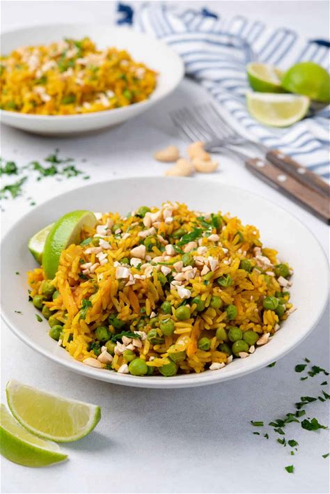
          <div class="card-body">
            <h3 class="card-title">Curry Rice</h3>
            <p class="card-text">
              Fragrant rice cooked with curry spices, peas, and carrots for a warming dish.
            </p>
            <h4>Ingredients</h4>
            <ul>
              <li>1 tbsp olive oil</li>
              <li>1 onion, finely chopped</li>
              <li>2 garlic cloves, finely chopped</li>
              <li>¾ tsp salt</li>
              <li>¾ tsp cayenne pepper</li>
              <li>¼ tsp paprika</li>
              <li>½ tsp ground ginger</li>
              <li>2 tsp curry powder</li>
              <li>1½ cups frozen peas</li>
              <li>2 carrots, grated</li>
              <li>1 cup long-grain rice</li>
              <li>2 cups vegetable stock</li>
            </ul>
            <h4>Instructions</h4>
            <ol>
              <li>Sauté onion, garlic, and spices in oil for 3–4 minutes.</li>
              <li>Add grated carrots and peas, cook 2–3 minutes.</li>
              <li>Stir in rice and vegetable stock.</li>
              <li>Cover and cook on medium-low for about 15 minutes until rice is tender.</li>
              <li>Fluff with a fork and serve warm.</li>
            </ol>
          </div>
        </div>
      </div>

      <!-- Greek Salad (you can replace with real ingredients if you want) -->
      <div class="col-md-6 col-lg-4">
        <div class="card h-100">
          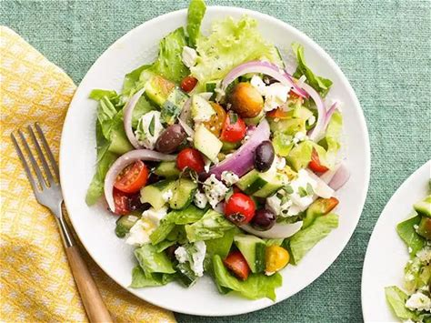
          <div class="card-body">
            <h3 class="card-title">Greek Salad</h3>
            <p class="card-text">
              A refreshing salad with crisp vegetables, olives, and feta cheese.
            </p>
            <h4>Ingredients</h4>
            <ul>
              <li>1 cucumber, chopped</li>
              <li>2–3 tomatoes, chopped</li>
              <li>½ red onion, sliced</li>
              <li>1 cup olives</li>
              <li>150 g feta cheese, cubed</li>
              <li>3 tbsp olive oil</li>
              <li>1 tbsp red wine vinegar</li>
              <li>1 tsp dried oregano</li>
              <li>Salt and pepper to taste</li>
            </ul>
            <h4>Instructions</h4>
            <ol>
              <li>Combine cucumber, tomatoes, onion, and olives in a bowl.</li>
              <li>Add feta cubes on top.</li>
              <li>Whisk olive oil, vinegar, oregano, salt, and pepper.</li>
              <li>Pour dressing over salad and toss gently. Serve fresh.</li>
            </ol>
          </div>
        </div>
      </div>

   </div>
      </section>
    </div>
